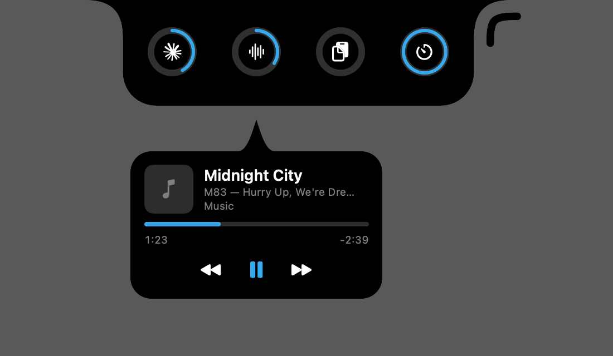
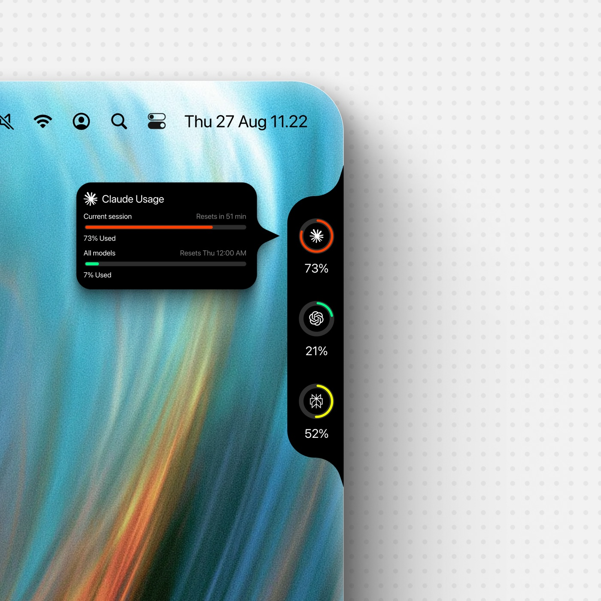
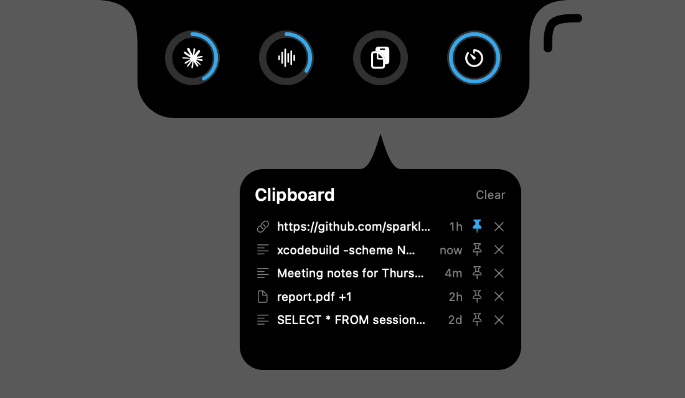
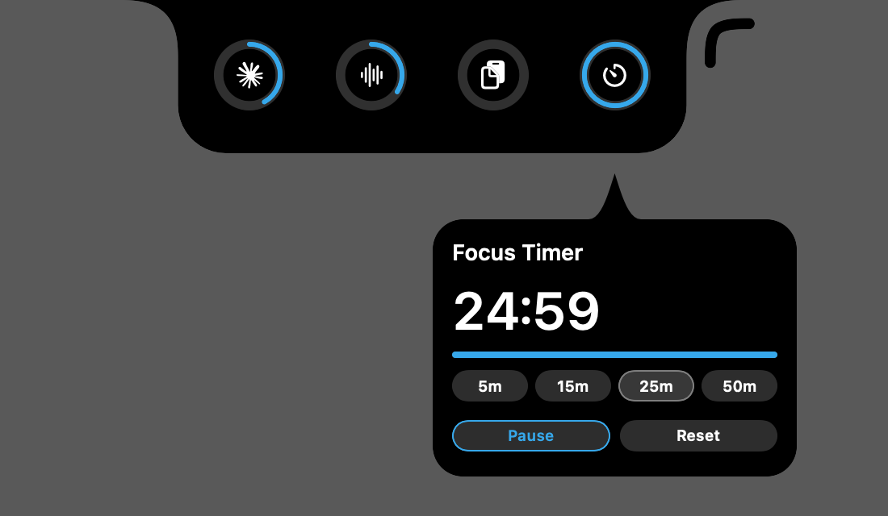
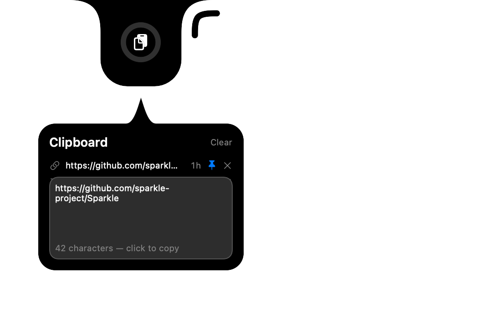

Now Playing
Whatever the system says is playing — Music, Spotify, podcasts, a browser tab — with artwork, a scrubber you can drag, and previous / play-pause / next. Click the cell itself to play or pause.
A small black notch on your screen edge that shows how much of each coding assistant's usage limit you have burned — and whether it is still working, done, or waiting on you — with Now Playing, clipboard history and a focus timer right beside the rings.

The deck
They ride the notch after the usage rings and behave exactly like them — they fold away, slide along the edge and follow it round all four sides of the screen. Switch any of them off and it stops reading anything at all.

Whatever the system says is playing — Music, Spotify, podcasts, a browser tab — with artwork, a scrubber you can drag, and previous / play-pause / next. Click the cell itself to play or pause.

The text, links, files and images you copied, most recent first. Click a clip to copy it again, pin the ones you reuse, and hover a long one to read it in full.

Pick 5, 15, 25 or 50 minutes, click the cell to start or pause, and the notch opens with a chime when time is up.

Clipboard, privately
Usage rings
Each ring is one assistant's limit, coloured by how much is gone. Hover it for every limit window and when it resets. A thin arc spins while a session is busy and pulses amber when one is waiting on you — and the notch opens by itself, with a sound, when an agent finishes or stops to ask.
Download
After the first install, NotchDeck checks this project's releases on its own and offers new versions in the notch — or press Settings → General → Check for Updates.
macOS 15 or later · Apple Silicon and Intel
xattr -dr com.apple.quarantine /Applications/NotchDeck.appWindows 10 or 11 · installs for the current user, no admin rights
Honest by design
Most providers are read with the session the tool you already use keeps on your machine — no new account, and no browser cookies are ever read.
Every failure shows as a visible status — stale, signed out, error — never as a made-up percentage.
NotchDeck sends no analytics or crash reports. It talks to the providers you switch on, and to GitHub to check for updates.
MIT licensed, built in Swift on macOS and Rust + Tauri on Windows. Read every line on GitHub.